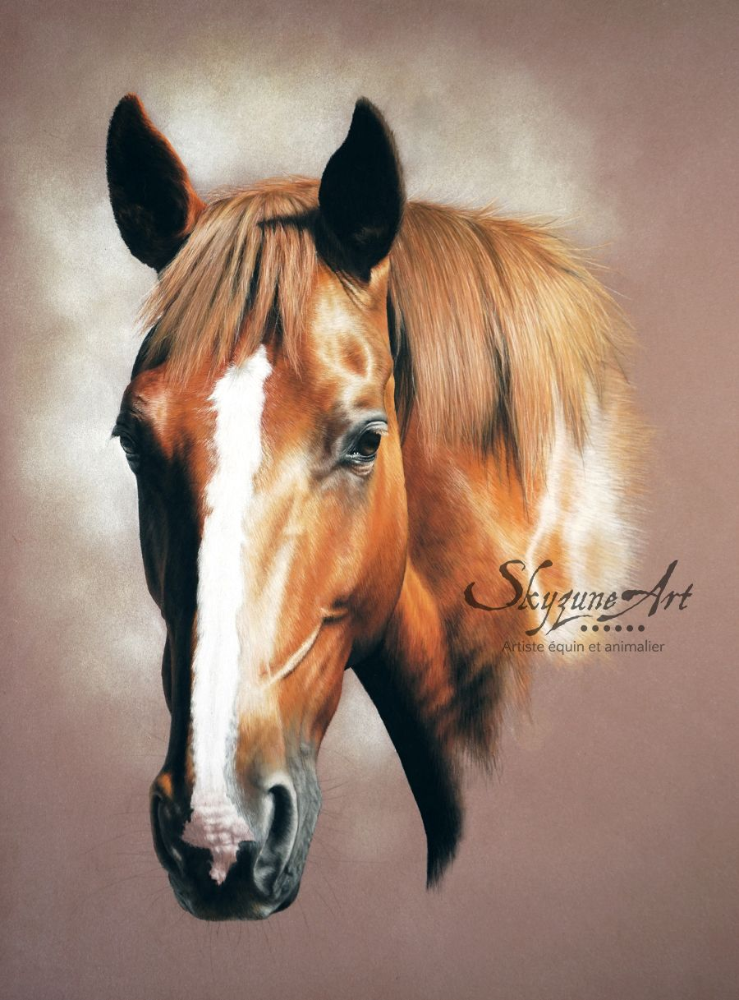
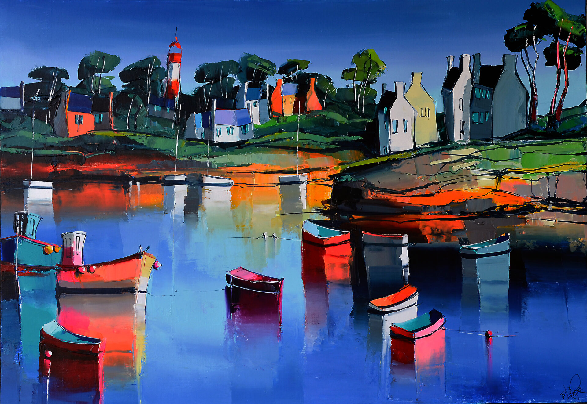
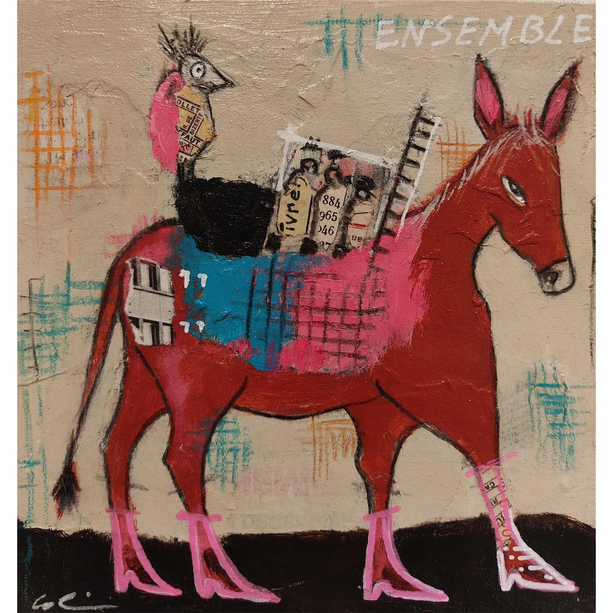
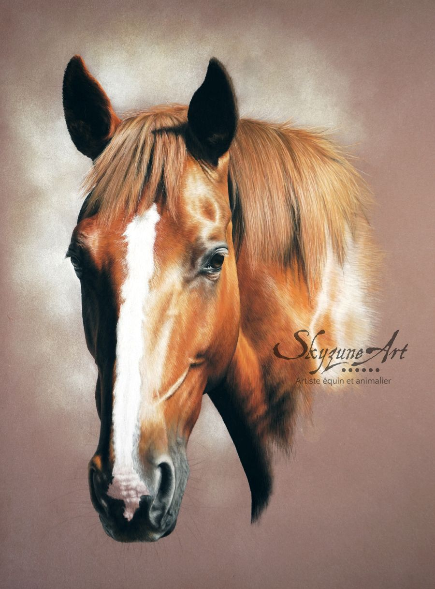
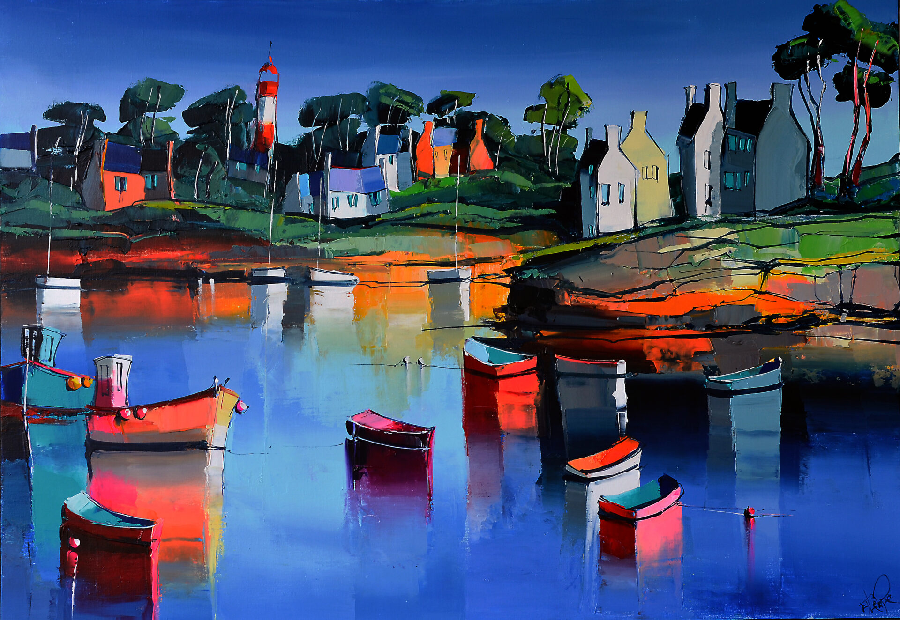
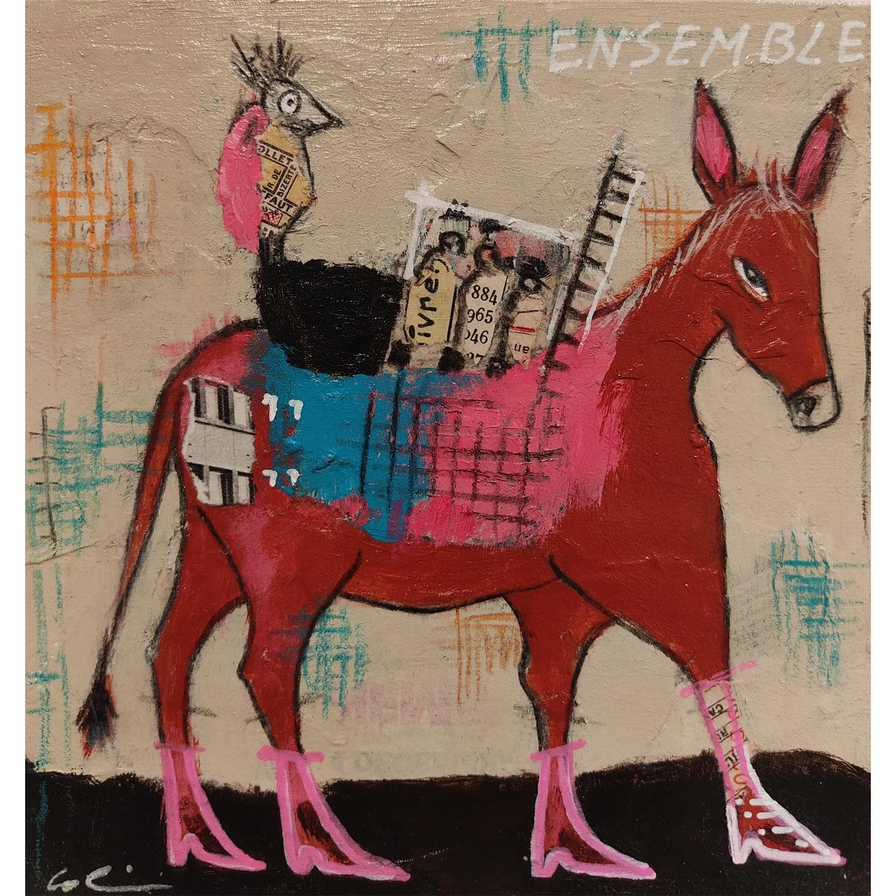
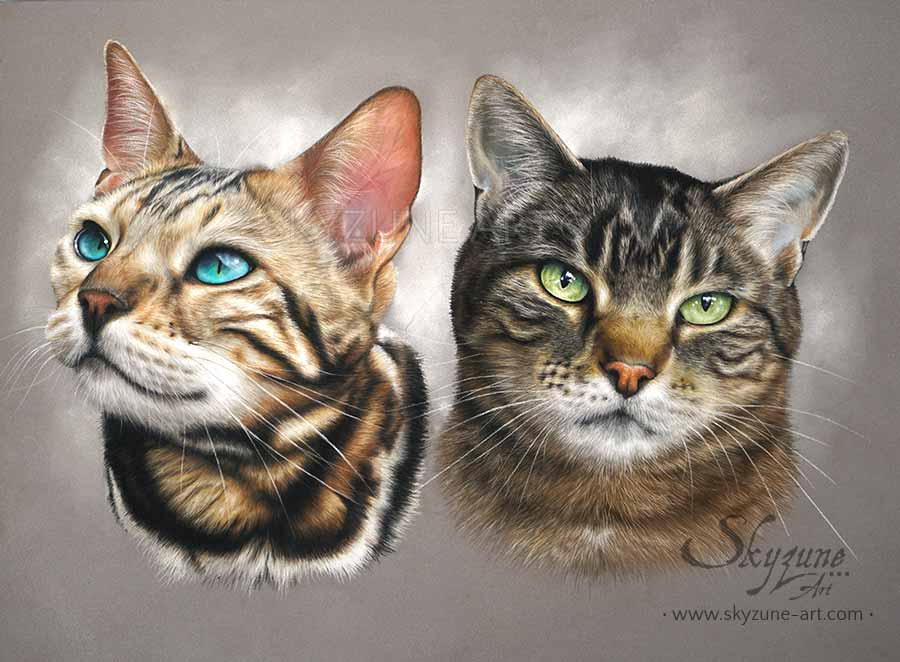
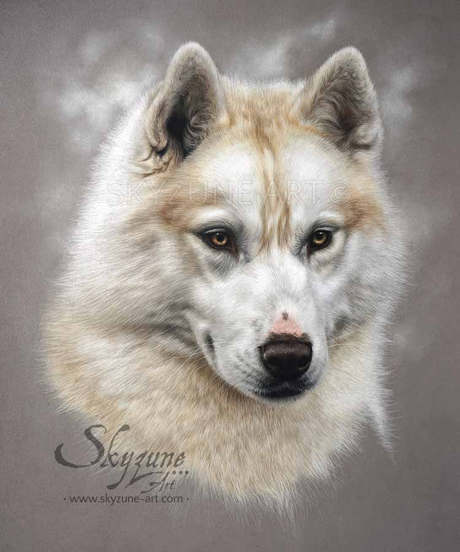
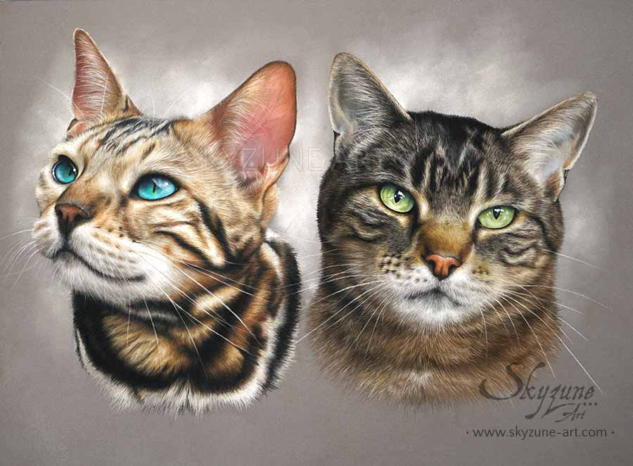
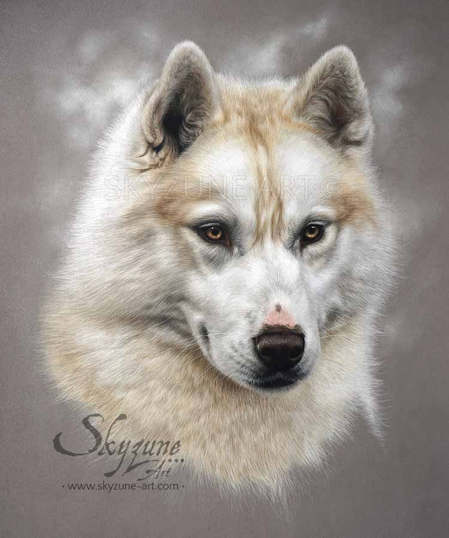

 



Cette association loi 1901 a pour but de rassembler des créateurs
dans le domaine des arts plastiques.
J'ai créé cette association avec plusieurs associés en 2016.
Depuis ce temps là, notre activité n'a cessé de se développer,
nous permettons aux amateurs d'art et aux artistes d'avoir
un lieu d'expression et de découverte de l'art.
Nos thèmes de prédilection sont ceux de la nature et du monde animal.
Ce ne sont pas les seuls thèmes qui sont représentés, en réalité
nous acceptons des oeuvres sur tous les sujets, et sur divers courants
artistiques, y compris l'art abstrait.
Mais il est vrai que nous exposons beaucoup d'oeuvres ayant pour sujet
le monde animal, ainsi que la nature et les paysages.
Vous pouvez nous contacter pour exposer en ligne sur cette
galerie en ligne des oeuvres d'art, des dessins, des tableaux...
Nous proposons en effet une galerie d'art en ligne sur ce site.
Cela vous permettra ainsi d'exposer vos oeuvres, et vous avez aussi
la possibilité de les vendre.
Envoyez nous des photos de vos oeuvres, ou votre book d'artiste, si elles sont retenues, vous pourrez les exposer gratuitement dans notre galerie, dans le local de l'association ou en ligne sur la galerie virtuelle de notre site internet. Nousu trop sélectifs. Ce qui compte pour nous, c'est que vous ayez un message à transmettre. Il peut s'agir d'un message artistique, d'un idéal, d'idées politiques, de projets, par exemple.
Cette association a pour ambition d'être un moyen d'expression pour les artistes. Elle permet la communication et la diffusion de l'art dans la cité.
L'atelier des artistes doit permettre d'aider les artistes à présenter leur travail sur internet
dans les meilleures conditions.
Nous organisons des événements "physiques", comme des
expositions artistiques ou des rencontres de formation pour le public,
ainsi que des concours artistiques et littéraires,
ouverts à tous publics.
Voici le programme des événements qui auront lieu cette année,
et qui, pour certains, seront renouvelés annuellement :
Concours de chroniques littéraires,
Exposition gratuite au profit du Refuge pour animaux.
Nous travaillons en effet en collaboration avec une autre association,
Le refuge, dédié à la protection des animaux, et accueillant des animaux abandonnés.
Semaine d'initiation à la culture artistique
Cours d'arts plastiques : dessin, peinture sur supports divers (papier,
carton, toile, support en bois ...)
Et à venir , à partir de janvier 2022, nous mettrons en place de nombreux événements
de qualité et à caractère culturel, auxquels nous vous invitons à participer.
Notre association pour le développement des arts dans la cité sera une aide et un lien social
pour les artistes débutants ou confirmés. Vous pourrez développer une expérience nouvelle et originale,
transmettre et partager votre pratique artistique, et promouvoir votre pratique auprès de différents publics.
C'est dans cet état d'esprit que vous vous proposons les diverses activités que nous organisons dans le
cadre de notre association. Elles vous permettront d'accéder à un nouveau contexte de travail, de réflexion et de production,
de découvrir de nouveaux artistes et produire une ou des expositions.
Lien vers le programme des activités